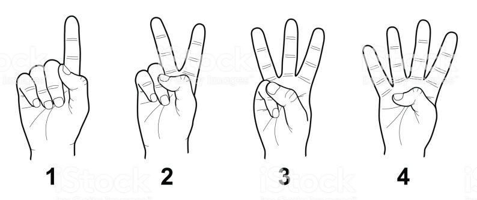
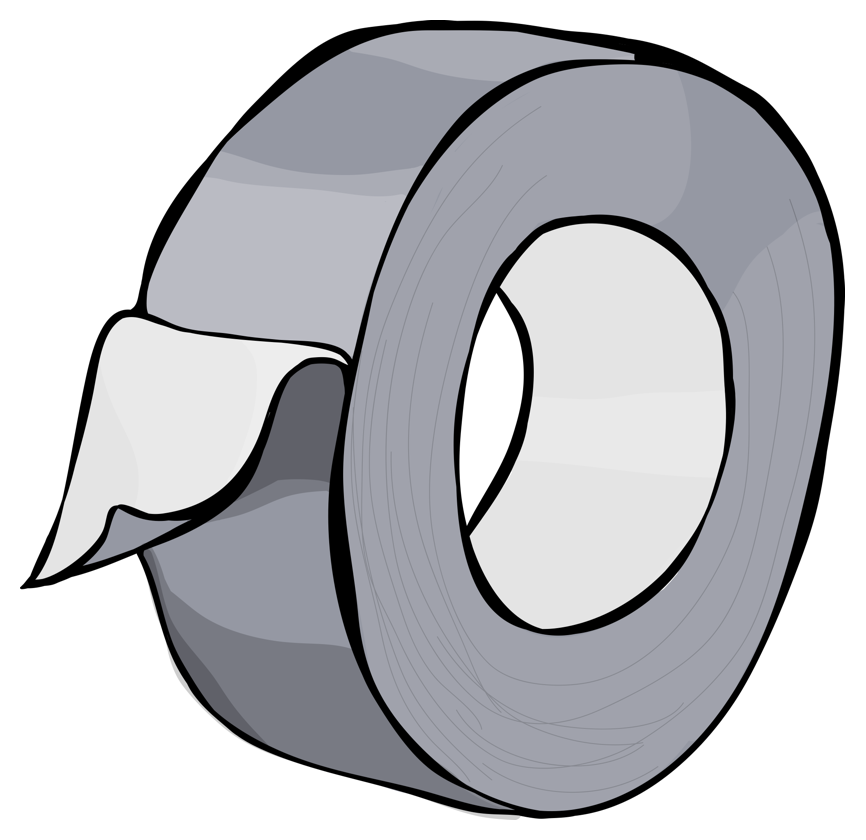

A Study in Accessibility
Who is this Sarah person?
- works at Microsoft
- web accessibility
- herds cats
OK but... why do I care?

Accessibility is:
- Freedom
- Privacy
- Participation
- Power
The Curb Cut effect

(source: the Smithsonian)
(source)
- Curb cuts
- Audio captions and transcripts
- High contrast mode or night mode
- Distraction-free features
- An accessible, semantic web?
Accessibility is Easy
Accessibility is Easy
Easy Accessibility is Easy
A Study in Accessibility:
Who killed the grid?
Part 1: Four A11y Tools
HTML

Keyboard Interaction

ARIA
Testing
A Case of Identity